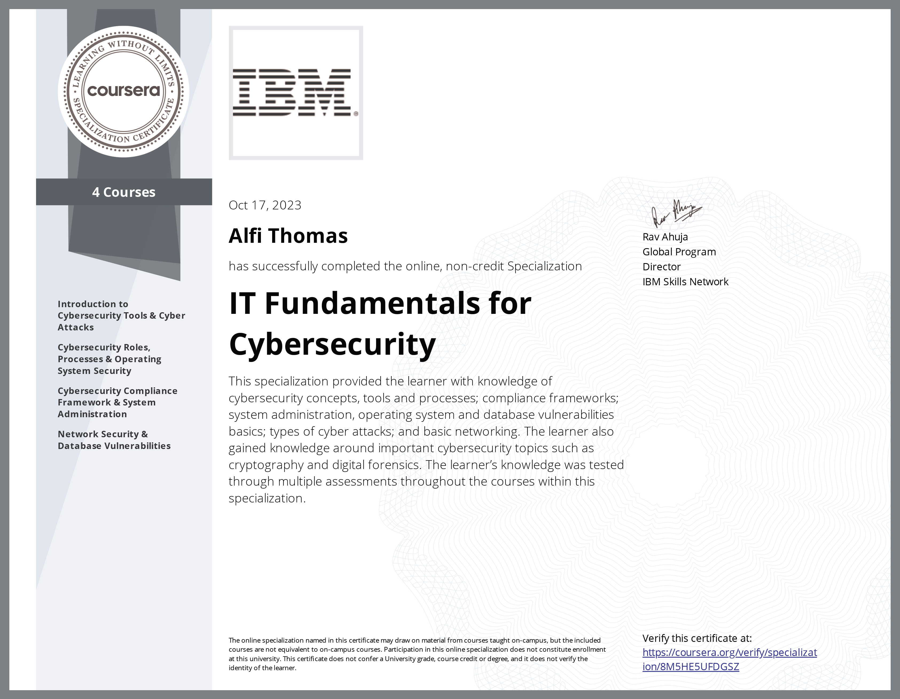

Issued to Alfi Thomas by Coursera
Authorized by IBM
This badge earner has completed the learning activities associated with the IT Fundamentals for Cybersecurity Specialization offered through Coursera. This specialization includes 4 courses. The individual has learned and explored concepts around system administration, cybersecurity tools, Operating System and database vulnerabilities, types of cyber attacks, and basics of networking.
Alfi Thomas has successfully completed the online, non-credit Specialization 'IT Fundamentals for Cybersecurity', authorized by IBM and offered through Coursera, on October 17, 2023.
Introduction to Cybersecurity Tools & Cyber Attacks
Cybersecurity Roles, Processes & Operating System Security
Cybersecurity Compliance Framework & System Administration
Network Security & Database Vulnerabilities